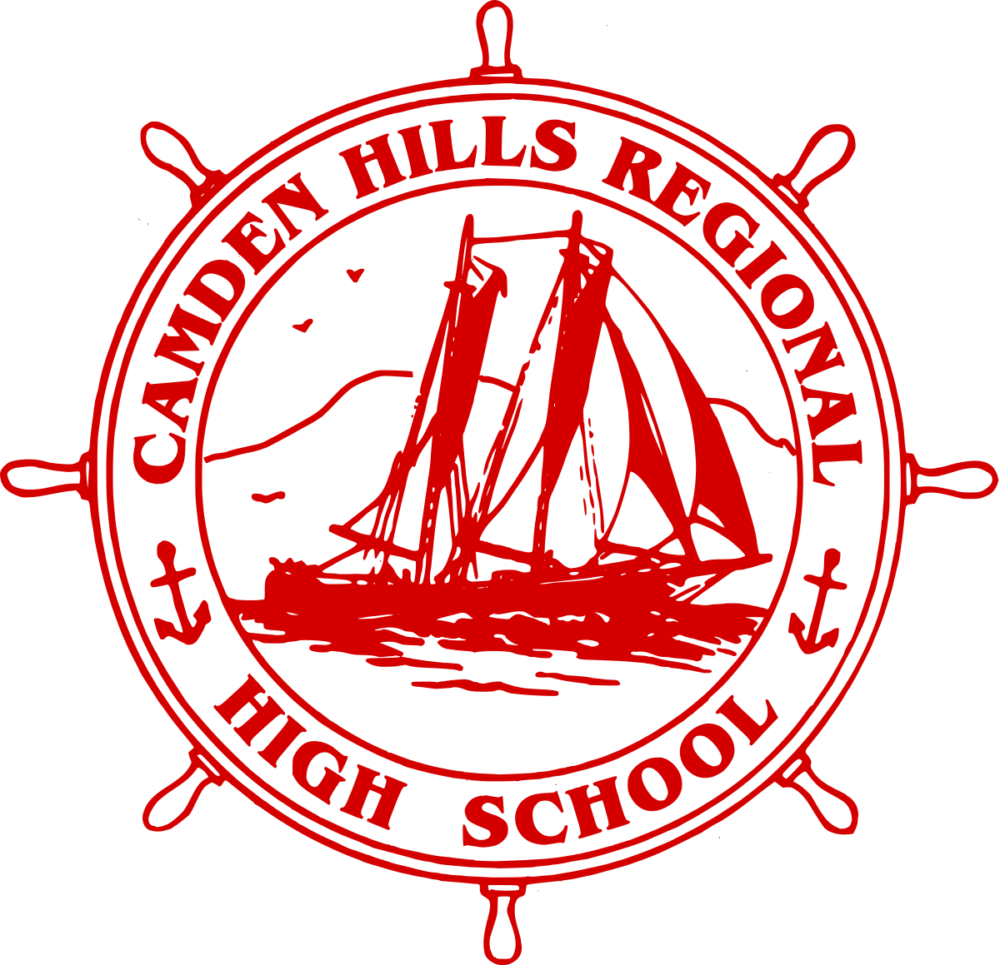

Welcome to my site. I am an aspiring photographer and filmmaker.

Here you can explore the projects I’ve worked on and learn
more about my background and sources of inspiration.
I’m proud of my journey so far in filmmaking and
I am always looking for the next adventure.
I am from Camden, Maine, but I am currently attending
Keene State College and studying Film Production.
I’m always looking for new opportunities to build on my skills and
feed my passion for filmmaking.
B.A. Film Production
-
Class of 2022

Class of 2018
Class of 2018